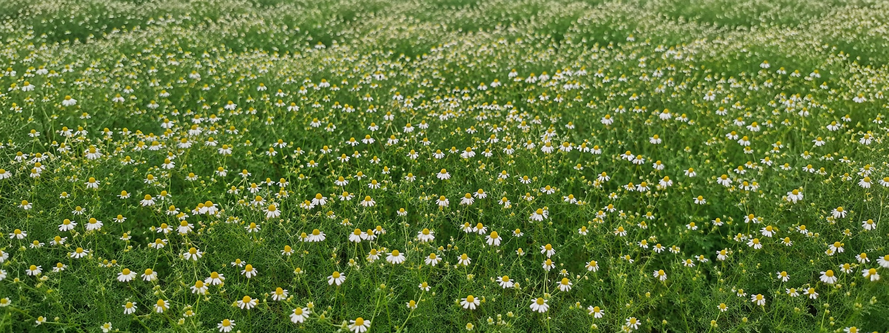
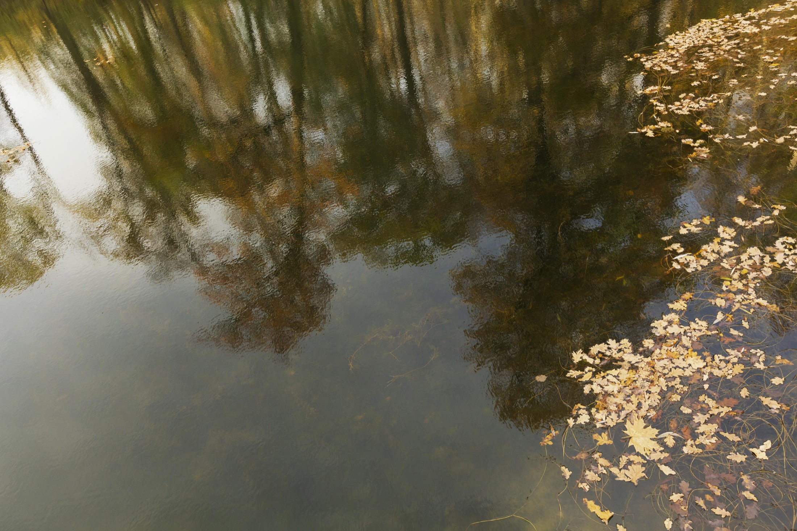
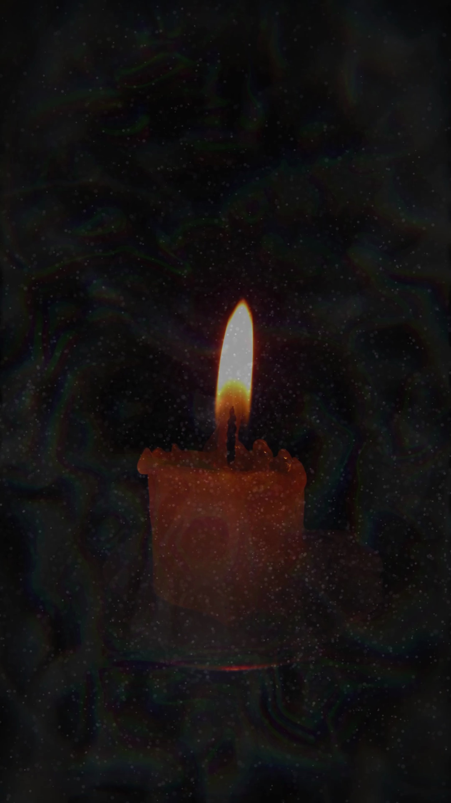
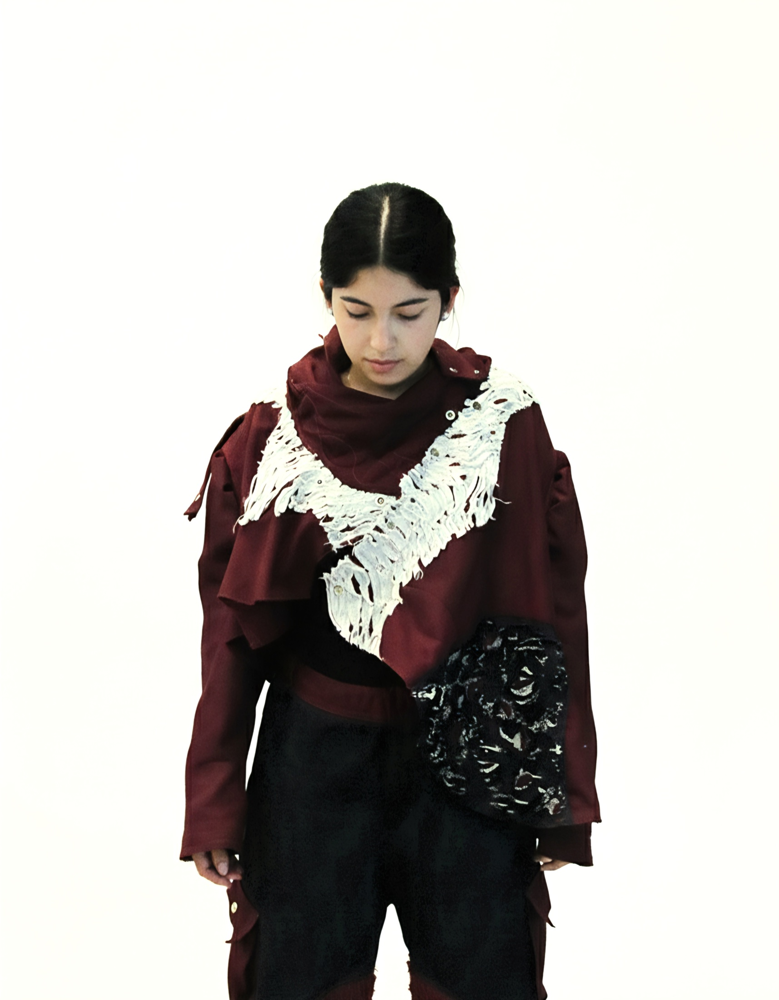
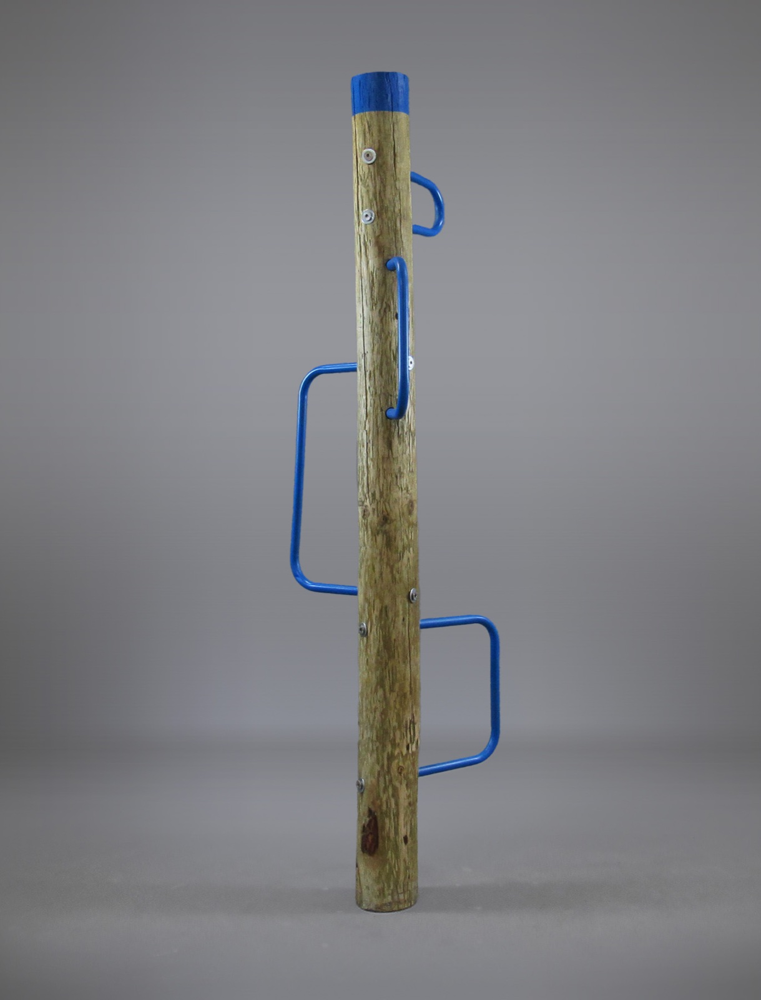

ARCHIVO DE proyectos
Selección unificada de experiencias interactivas del curso DPPI y obras de diseño industrial e indumentaria experimental.
T07 · DPPI · 2026
DOMESTICADAS · La Ilusión de la Libertad

EXISTIR COMO ESTRUCTURA vs. acontecimiento

CRISOL AUDIOREACTIVO · Piedad

BIVALVIA · Superficies Textiles

VESTIDO YARA · Moda Sostenible
